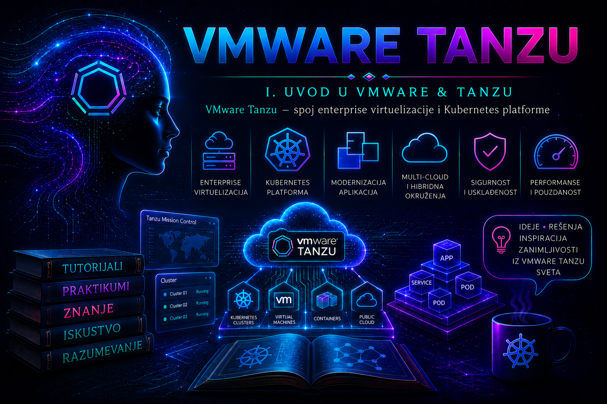

VMware & Tanzu

VMware & Tanzu predstavlja spoj dva infrastrukturna modela koji rešavaju različite, ali međusobno povezane probleme. VMware vSphere obezbeđuje pouzdan sloj računarskih, mrežnih i skladišnih resursa na kojem se izvršavaju virtuelne mašine, dok Tanzu i povezane Kubernetes usluge omogućavaju da se aplikacije isporučuju i održavaju kao kontejnerski workload-i. Za administratora to ne znači da Kubernetes zamenjuje virtuelizaciju, već da se iznad postojeće softverski definisane infrastrukture uvodi dodatni upravljački sloj namenjen modernim aplikacijama.
U tradicionalnom VMware okruženju osnovna jedinica rada je virtuelna mašina. Ona ima sopstveni operativni sistem, virtuelne procesore, memoriju, diskove, mrežne interfejse i životni ciklus kojim upravljaju ESXi i vCenter Server. U Kubernetes okruženju osnovna jedinica raspoređivanja je Pod, koji sadrži jedan ili više kontejnera i izvršava se na Kubernetes node-u. Node može biti virtuelna mašina, fizički server ili, u određenim vSphere arhitekturama, deo integrisanog Supervisor okruženja. Tanzu povezuje ove slojeve tako da infrastrukturni tim i aplikacioni tim ne moraju da upravljaju istim objektima niti da koriste ista prava pristupa.
Važna terminološka napomena. Nazivi i način pakovanja VMware Kubernetes tehnologija menjali su se između generacija proizvoda. U dokumentaciji za vSphere 7 i deo vSphere 8 okruženja često se pojavljuju izrazi vSphere with Tanzu, Supervisor Cluster, Tanzu Kubernetes Grid Service i Tanzu Kubernetes Release. U novijoj dokumentaciji za VMware Cloud Foundation i aktuelne vSphere generacije sve češće se koriste nazivi vSphere Supervisor, vSphere Kubernetes Service i VMware Kubernetes Release. Samostalni Tanzu Kubernetes Grid sa zasebnim management klasterom i dalje predstavlja drugačiji model implementacije. Administrator zato pre primene bilo kog postupka mora proveriti tačnu verziju vCenter Server-a, ESXi hostova, Supervisor-a, Kubernetes servisa i podržanih Kubernetes izdanja.
Virtuelizacija i Kubernetes rešavaju različite probleme
Virtuelizacija apstrahuje fizički hardver. ESXi raspoređuje procesorsko vreme, memoriju, mrežni i skladišni pristup između virtuelnih mašina. vCenter Server pruža centralni inventar, upravljanje klasterima, pravilima raspoređivanja, dostupnošću, migracijama i životnim ciklusom infrastrukture. Administrator može da zaštiti aplikaciju funkcijama kao što su vSphere High Availability, Distributed Resource Scheduler, vMotion, Storage vMotion, vSphere Lifecycle Manager i politikama skladištenja.
Kubernetes apstrahuje izvršavanje kontejnerskih aplikacija. Korisnik opisuje željeno stanje deklarativnim objektima: koliko replika aplikacije treba da postoji, koji image treba da se pokrene, koje resurse Pod može da koristi, kako se aplikacija izlaže mreži i koji trajni volumen joj je potreban. Kubernetes kontroleri zatim neprekidno porede željeno i stvarno stanje. Ako Pod prestane da radi, Deployment kontroler pokušava da ga zameni. Ako node postane nedostupan, workload se, u zavisnosti od konfiguracije i raspoloživih resursa, raspoređuje na drugi node.
Ova dva mehanizma samoisceljivanja nisu ista. vSphere HA reaguje na kvar hosta ili virtuelne mašine i ponovo pokreće VM na dostupnom hostu. Kubernetes reaguje na stanje aplikacionih objekata i kreira nove Pod-ove. Kada se Kubernetes node izvršava kao VM na vSphere infrastrukturi, oba sloja mogu učestvovati u oporavku. To povećava otpornost, ali i zahteva pažljivo projektovanje. Neusklađeni timeout-i, anti-affinity pravila, maintenance postupci ili nedostatak kapaciteta mogu izazvati duže prekide, višestruke pokušaje oporavka ili nepotrebno premeštanje workload-a.
| Sloj | Primarni objekti | Glavna odgovornost | Tipična provera |
|---|---|---|---|
| Fizička infrastruktura | Serveri, mrežni uređaji, storage sistemi | Napajanje, povezivost, kapacitet i hardverska ispravnost | Hardverski alarmi, redundantne putanje, stanje portova i diskova |
| vSphere | ESXi hostovi, VM-ovi, klasteri, datastore-ovi, mreže | Virtuelizacija i raspodela infrastrukturnih resursa | vCenter alarmi, HA/DRS stanje, performanse i usklađenost hostova |
| Supervisor ili management sloj | Namespace-ovi, klase VM-ova, Kubernetes klasteri, servisi | Upravljanje Kubernetes okruženjima i politikama potrošnje | Stanje Supervisor-a, kontrolera, zona, mreže i storage politika |
| Kubernetes | Node-ovi, Pod-ovi, Deployment-i, Service-i, volumeni | Željeno stanje i životni ciklus kontejnerskih aplikacija | Conditions, događaji, probe, logovi i raspoloživost replika |
| Aplikacija | Procesi, API-ji, baze, redovi poruka i poslovne transakcije | Funkcionalna usluga korisniku | Sintetički testovi, SLI/SLO metrike i poslovne kontrole |
Uloga VMware infrastrukture u Tanzu okruženju
VMware infrastruktura Tanzu okruženju obezbeđuje procesorske i memorijske resurse, virtuelne mreže, skladišne politike, dostupnost i kontrolisani životni ciklus hostova. U integrisanom modelu Supervisor se aktivira nad podržanim vSphere klasterom. Na njemu se uspostavlja Kubernetes kontrolni sloj, a vSphere Namespace postaje granica za dodelu resursa, prava pristupa, storage politika i drugih usluga timovima.
vSphere Namespace nije samo Kubernetes namespace. On je infrastrukturna granica kojom vSphere administrator dodeljuje deo kapaciteta i dozvoljenih servisa korisnicima. Unutar njega ovlašćeni korisnici mogu, u zavisnosti od verzije i konfiguracije, da kreiraju Kubernetes klastere, virtuelne mašine ili druge podržane workload-e. Zbog toga loše postavljene kvote, preširoka prava ili neodgovarajuće storage politike mogu uticati i na infrastrukturu i na aplikacije.
Storage se povezuje kroz vSphere politike skladištenja i Container Storage Interface. Aplikacija traži trajni volumen kroz PersistentVolumeClaim, Kubernetes bira odgovarajuću StorageClass, a integracija sa vSphere infrastrukturom obezbeđuje odgovarajući virtuelni disk i njegovo vezivanje za node. Administrator ne treba da posmatra samo slobodan prostor na datastore-u. Mora proveravati kompatibilnost storage politike, dozvoljene topologije, performanse, redundantnost, attach ograničenja i ponašanje volumena tokom kvara ili migracije.
Mrežni sloj zavisi od izabrane arhitekture i verzije. Supervisor i Kubernetes klasteri zahtevaju upravljačku, workload i ulazno-izlaznu povezivost, DNS, NTP, pristup registrima, balansiranje opterećenja i odgovarajuće rutiranje. Implementacija može koristiti NSX ili podržane modele zasnovane na vSphere mrežama i spoljnim komponentama. Nije dovoljno da virtuelne mašine imaju IP adrese. Potrebno je dokazati da kontrolni čvorovi, worker node-ovi, Pod mreže, servisi, load balancer i korisnički sistemi mogu da komuniciraju samo tokovima koji su zaista potrebni.
Tanzu kao porodica proizvoda i usluga
Tanzu nije jedan program koji se instalira na server. Naziv obuhvata više proizvoda i usluga povezanih sa Kubernetes infrastrukturom, upravljanjem klasterima, aplikacionim platformama i operativnim radom. Dostupne komponente zavise od ugovora, licence, izdanja VMware Cloud Foundation-a, podržane platforme i perioda u kojem je proizvod nabavljen. Zbog promena u portfoliju administrator ne sme da zaključuje da je funkcionalnost dostupna samo zato što se u njenom nazivu pojavljuje Tanzu.
Za infrastrukturnog administratora posebno su važna tri modela. Prvi je Kubernetes servis integrisan sa vSphere Supervisor-om, u kojem se workload klasteri deklarativno kreiraju unutar vSphere Namespace-a. Drugi je samostalni Tanzu Kubernetes Grid, u kojem zaseban management klaster upravlja workload klasterima na podržanoj infrastrukturi. Treći su starije ili specijalizovane platforme, kao što je Tanzu Kubernetes Grid Integrated Edition, čija arhitektura, alati i postupci upravljanja nisu isti kao kod savremenog TKG ili VKS okruženja.
Mešanje dokumentacije između ovih modela predstavlja čestu administrativnu grešku. Komanda, YAML polje ili postupak nadogradnje namenjen standalone TKG management klasteru ne mora važiti za klaster kojim upravlja Supervisor. Čak i kada oba okruženja koriste Cluster API i slične Kubernetes objekte, podržane konfiguracione promenljive, način objavljivanja izdanja i redosled nadogradnje mogu biti različiti.
Portfolio je zato korisnije čitati po odgovornosti sloja nego po brendu. Kubernetes infrastruktura obezbeđuje klastere, node-ove, mrežu i trajne volumene. Platform services iznad nje standardizuju identitet, politike, katalog usluga, observability, isporuku softvera i druge zajedničke mogućnosti. Aplikacioni sloj obuhvata izvršni model, razvojne konvencije, build i deployment tokove, aplikacione servise i iskustvo razvojnog tima. Tanzu Platform i Tanzu Hub pripadaju ovom širem aplikacionom i fleet-management prostoru; nisu sinonimi za VKS i njihova dostupnost, topologija i licenciranje proveravaju se zasebno.
| Sloj portfolija | Šta tim dobija | Tipični objekti i proizvodi | Ključna arhitektonska odluka |
|---|---|---|---|
| Kubernetes infrastruktura | Podržan životni ciklus klastera i integraciju sa compute, mrežnim i storage resursima | vSphere Supervisor, VKS klasteri, VKr, standalone TKG management i workload klasteri | Da li se klasterima upravlja preko Supervisor-a ili zasebnog management klastera i koja je zvanično podržana matrica verzija |
| Platform services | Ponovljive zajedničke usluge, politike i operativnu vidljivost kroz više klastera ili foundation-a | Standard Packages za VKS, registry, ingress, identitet, policy, monitoring, logovanje i Tanzu Platform services | Ko je vlasnik servisa, gde se čuva stanje, kako se servis nadograđuje i da li je deo podržanog paketa ili dodatno licenciran proizvod |
| Aplikacioni sloj | Standardizovan put od izvornog koda do izvršne aplikacije i vezanih servisa | Aplikacioni workload-i, Tanzu Platform foundation-i i application spaces, marketplace i servisne instance | Koliko apstrakcije platforma uvodi, koje aplikacije joj pripadaju i gde ostaje odgovornost razvojnog tima |
| Globalno upravljanje | Inventar i operativni pogled nad foundation-ima, aplikacijama i servisima | Tanzu Hub i povezani fleet-management tokovi | Koji podaci napuštaju lokalno okruženje, kako se uspostavlja poverenje i da li centralni sloj ulazi u kritični put izvršavanja aplikacije |
Granica ove knjige. Težište tutorijala je na Kubernetes infrastrukturnom i platformskom sloju na VMware infrastrukturi: projektovanju Supervisor-a, namespace-ova i VKS klastera, mreži, storage-u, identitetima, bezbednosti, životnom ciklusu, observability-ju, backup-u i dijagnostici. Tanzu Platform, Tanzu Hub, Cloud Foundry i specijalizovani aplikacioni proizvodi razmatraju se samo kada objašnjavaju mesto servisa u celini ili zavisnost koju infrastrukturni administrator mora da obezbedi. Knjiga zato nije katalog svakog proizvoda koji je u nekoj generaciji nosio naziv Tanzu, niti vodič za razvoj Spring aplikacija.
Ovakva granica sprečava dve greške. Prva je kupovina „Tanzu-a” bez preciziranja sposobnosti, licence, ciljne platforme i operativnog vlasnika. Druga je projektovanje Kubernetes klastera bez aplikacionih zahteva, pa se tek posle implementacije otkrije da nedostaju registry, identitet, egress, observability, servisni broker, backup ili podržani način isporuke. Arhitektura polazi od workload-a i SLO zahteva, ali svaku sposobnost mapira na konkretan proizvod, verziju i tim koji je održava.
Verzijska granica. U vSphere 8.0 Update 3 generaciji životni ciklus VKS servisa može biti odvojen od životnog ciklusa Supervisor-a, pa kompatibilnost više nije moguće zaključiti samo iz verzije vCenter Server-a. Potrebno je zasebno evidentirati vCenter/ESXi build, Supervisor Kubernetes verziju, VKS service verziju i izabrani VKr, kao i status podrške tog izdanja. U VCF 9 dokumentaciji Supervisor je deo VMware Cloud Foundation ili VMware vSphere Foundation ponude, a mogućnosti i mrežni modeli moraju se proveravati prema konkretnom izdanju i licenci; nazivi iz vSphere 7 dokumentacije ostaju važni za održavanje starijih instalacija, ali nisu dovoljan projektni jezik za novu implementaciju.
Željeno stanje i podela odgovornosti
Ključna promena koju Kubernetes uvodi u VMware okruženje jeste deklarativno upravljanje. Administrator više ne treba da posmatra svaku virtuelnu mašinu Kubernetes klastera kao ručno održavan server. Node VM-ovi najčešće pripadaju automatizovanom životnom ciklusu klastera. Ručna promena njihovog procesora, memorije, diska, mreže ili operativnog sistema može biti izgubljena pri sledećem usklađivanju ili zameni node-a, a može i ostaviti klaster u nepodržanom stanju.
Željena promena zato se unosi kroz podržani API, deklaraciju klastera, ClusterClass, konfiguracione promenljive ili odgovarajući upravljački interfejs. Kontroleri zatim kreiraju, menjaju ili zamenjuju potrebne infrastrukturne objekte. Administrator proverava i deklaraciju i stvarno stanje. Nije dovoljno da je komanda prihvaćena; potrebno je pratiti Kubernetes conditions, događaje, stanje mašina, node-ova i aplikacionih workload-a dok se usklađivanje ne završi.
Podela odgovornosti mora biti formalno definisana. vSphere tim obično odgovara za hostove, vCenter, klastere, mrežne segmente, storage politike, sertifikate infrastrukturnih servisa i kapacitet. Platformsko-Kubernetes tim upravlja Supervisor-om ili management klasterom, izdanjima Kubernetes-a, klasama klastera, sistemskim paketima, pristupom i politikama. Aplikacioni tim odgovara za image, manifest, konfiguraciju, probe, zahteve za resursima i funkcionalnost aplikacije. Bez jasne granice, infrastrukturni tim može pokušati da rešava problem u aplikacionom image-u, dok aplikacioni tim može menjati sistemske objekte koje platforma automatski održava.
Kada je VMware & Tanzu opravdano rešenje
Ovaj pristup je opravdan kada organizacija već ima stabilno vSphere okruženje, operativno znanje, standardizovane mrežne i storage usluge i potrebu da Kubernetes uvede bez stvaranja potpuno odvojene infrastrukturne platforme. Posebno je koristan kada se zahtevaju centralno upravljanje resursima, politika pristupa, integracija sa postojećim podatkovnim centrom, kontrolisan životni ciklus i podržana Kubernetes distribucija.
Rešenje nije automatski opravdano za svaku aplikaciju. Monolitna aplikacija koja se retko menja, zahteva specifičan operativni sistem i nema potrebu za horizontalnim skaliranjem može ostati jednostavnija kao VM. Mala organizacija bez dovoljno znanja za upravljanje distribuiranim sistemima može dobiti više operativnog rizika nego koristi. Kubernetes takođe ne rešava loš aplikacioni dizajn, ne pretvara automatski stateful aplikaciju u visoko dostupnu uslugu i ne uklanja potrebu za backup-om podataka.
Pre odluke treba proceniti broj i tip aplikacija, zahteve za dostupnošću, regulatorne obaveze, mrežnu segmentaciju, storage performanse, image registry, identitete, sertifikate, monitoring, logovanje, backup, disaster recovery i raspoloživo administratorsko znanje. Tehnički uspešna instalacija nije isto što i produkciono spremna platforma.
Najvažniji produkcioni rizici
- Nedovoljan kapacitet. Supervisor, kontrolni čvorovi, worker node-ovi i aplikacije troše resurse iz istog ili povezanih vSphere klastera. Bez rezervnog kapaciteta kvar hosta ili nadogradnja mogu ostaviti Pod-ove u stanju Pending i sprečiti zamenu node-a.
- Neusklađene verzije. vCenter Server, ESXi, Supervisor, Kubernetes servis, Kubernetes izdanje, mrežni i storage dodaci imaju sopstvene matrice kompatibilnosti. Nadogradnja samo jednog sloja bez provere podržanog redosleda može prekinuti upravljanje klasterima.
- DNS, NTP i sertifikati. Mnogi simptomi koji izgledaju kao kvar Kubernetes-a potiču od pogrešnog razrešavanja imena, vremenskog odstupanja, isteka sertifikata ili nepotpunog lanca poverenja.
- Ručne promene upravljanih objekata. Direktno menjanje node VM-a, sistemskog Deployment-a ili objekta kojim upravlja kontroler može biti poništeno ili izazvati neusaglašeno stanje.
- Neograničena potrošnja. Namespace bez kvota, workload bez zahteva i ograničenja resursa ili prevelike klase node-ova mogu iscrpeti klaster i uticati na druge timove.
- Nepotpuna observability strategija. vCenter alarmi ne pokazuju nužno grešku aplikacije, a Kubernetes događaji ne pokazuju kvar fizičke mreže. Potrebno je povezati metrike, događaje i logove svih slojeva.
- Pogrešno shvaćen backup. Snapshot virtuelne mašine nije potpuna strategija zaštite Kubernetes platforme. Potrebno je odvojeno zaštititi upravljačku konfiguraciju, deklaracije, tajne prema pravilima organizacije, trajne podatke i spoljne servise.
Integrisani praktikum: procena spremnosti VMware okruženja za Tanzu
Poslovni kontekst. Organizacija koristi vSphere za poslovne aplikacije i želi da uvede prvi kontrolisani Kubernetes prostor za razvojni tim. Cilj praktikuma nije automatska aktivacija Supervisor-a, jer bi se konkretni koraci razlikovali prema verziji, mrežnom modelu i licenci. Cilj je da administrator prikupi proverljive dokaze o postojećem stanju, identifikuje blokirajuće nedostatke i napravi osnovni izveštaj spremnosti pre bilo kakve produkcione promene.
Referentno okruženje. Primer koristi vCenter Server vcsa01.lab.example, vSphere datacentar DC01, klaster CL-TANZU-01, distributed switch VDS-TANZU-01, datastore DS-VSAN-01 i administratorsku Linux radnu stanicu. Na radnoj stanici su instalirani govc, curl, openssl i standardni DNS alati. Korišćeni nalog ima read-only pristup vCenter inventaru. Za ovu početnu procenu nisu potrebna prava za menjanje infrastrukture.
Preduslovi. Administrator mora imati odobren pristup vCenter Server-u, poznatu internu CA hijerarhiju, adresu DNS i NTP servisa i mesto za čuvanje izveštaja. Lozinka se ne upisuje u skriptu, shell istoriju ili dokumentaciju. Promenljive okruženja koriste se samo tokom aktivne sesije, a produkciona automatizacija treba da koristi odobreni secrets manager.
- Kreiranje radnog direktorijuma i bezbedno definisanje sesije. Izveštaji se čuvaju u zasebnom direktorijumu sa ograničenim pravima. Vrednost
GOVC_INSECUREostaje0, jer preskakanje TLS validacije ne sme biti podrazumevana praksa.
Validacija: proverava se da direktorijum nije dostupan drugim korisnicima i da su promenljive definisane bez prikazivanja lozinke.umask 077 mkdir -p "$HOME/tanzu-readiness-CL-TANZU-01" cd "$HOME/tanzu-readiness-CL-TANZU-01" export GOVC_URL='https://vcsa01.lab.example' export GOVC_USERNAME='svc_tanzu_audit@vsphere.local' export GOVC_INSECURE='0' read -rsp 'vCenter password: ' GOVC_PASSWORD export GOVC_PASSWORD printf '\n'
Očekivani rezultat je direktorijum sa pravima koja dozvoljavaju pristup samo vlasniku i povratni kod nula za proveru promenljivih.stat -c '%A %U %G %n' "$HOME/tanzu-readiness-CL-TANZU-01" test -n "$GOVC_URL" && test -n "$GOVC_USERNAME" && test -n "$GOVC_PASSWORD" - Provera DNS-a, vremena i TLS identiteta vCenter Server-a. Pre prijave proverava se da FQDN vraća očekivanu adresu i da server predstavlja sertifikat za odgovarajuće ime. TLS greška ne rešava se trajnim uključivanjem opcije za ignorisanje sertifikata.
Validacija: DNS rezultat mora sadržati odobrenu adresu, TLS provera mora završiti bez greške lanca poverenja, a radna stanica mora biti sinhronizovana sa odobrenim vremenskim izvorom. Ako interna CA nije instalirana na radnoj stanici, prvo se u sistemsko skladište poverenja uvozi odobreni CA sertifikat; ne koristi segetent ahosts vcsa01.lab.example | tee dns-vcenter.txt timeout 10 openssl s_client \ -connect vcsa01.lab.example:443 \ -servername vcsa01.lab.example \ -verify_return_error \ </dev/null 2>&1 | tee tls-vcenter.txt timedatectl status | tee workstation-time.txtGOVC_INSECURE=1kao trajno rešenje. - Provera identiteta, verzije i dostupnosti vCenter Server-a. Komande čitaju osnovne podatke i dokazuju da nalog može da pristupi API-ju.
Validacija: izlaz mora prikazati očekivani vCenter Server i verziju. Verzija se zatim poredi sa aktuelnom matricom kompatibilnosti za izabrani Supervisor i Kubernetes servis. Sama činjenica da je prijava uspešna ne dokazuje da je okruženje podržano.govc session.login govc about | tee vcenter-about.txt govc session.ls | tee vcenter-session.txt - Inventarisanje ciljnog klastera i ESXi hostova. Prvo se potvrđuje da izabrani inventarski objekti postoje, zatim se prikupljaju informacije o hostovima i klasteru.
Validacija: cilj je da postoji tačno jedan očekivani klaster i da su svi planirani hostovi vidljivi. U vCenter interfejsu dodatno se proveravaju disconnected ili not responding stanja, aktivni alarmi, HA konfiguracija, DRS režim, lifecycle image usklađenost, maintenance mode i hardverska kompatibilnost. Odluka o Supervisor-u ne donosi se samo na osnovu broja hostova.govc find /DC01 -type c -name 'CL-TANZU-01' | tee cluster-path.txt govc find /DC01/host/CL-TANZU-01 -type h | tee esxi-hosts.txt govc cluster.info -json /DC01/host/CL-TANZU-01 > cluster-info.json while IFS= read -r host; do govc host.info -json "$host" done < esxi-hosts.txt > esxi-host-info.jsonl - Provera kapaciteta i rezervnog prostora za kvar. Izveštaj o resursima mora pokazati ukupan i raspoloživ kapacitet, ali administrator procenjuje i stanje posle gubitka jednog hosta, planirane nadogradnje i istovremenog rasta aplikacija.
Validacija: opcije i dostupna imena metrika zavise od verzijegovc object.collect \ /DC01/host/CL-TANZU-01 \ summary.totalCpu \ summary.effectiveCpu \ summary.totalMemory \ summary.effectiveMemory \ summary.numHosts \ summary.numEffectiveHosts | tee cluster-capacity.txt govc metric.sample -n 12 -d 5m \ /DC01/host/CL-TANZU-01 \ cpu.usage.average \ mem.usage.average | tee cluster-metrics.txtgovc, tipa objekta i intervala statistike. Pre uzorkovanja proveravaju se pomoćugovc metric.sample -higovc metric.ls /DC01/host/CL-TANZU-01. Istorijske metrike moraju obuhvatiti reprezentativan period, a ne samo trenutni uzorak. Kao praktični kriterijum prihvatanja, projektni tim mora dokumentovati da posle planiranog gubitka jednog hosta ostaje dovoljno kapaciteta za Supervisor kontrolni sloj, minimalni broj Kubernetes node-ova i kritične postojeće VM workload-e. Prag se ne određuje univerzalnim procentom, već proračunom konkretnih rezervacija, limita, HA politike i očekivanog rasta. - Provera mrežnih objekata. Postojanje distributed switch-a i port grupa ne dokazuje funkcionalnu mrežu, ali predstavlja početnu inventarsku kontrolu.
Validacija: mrežni dizajn mora dokumentovati management, workload, ingress/egress i load-balancer tokove prema izabranoj arhitekturi. Za svaki segment proveravaju se VLAN, MTU, gateway, DHCP ili statički opseg, DNS, NTP, rutiranje, firewall pravila i raspoloživost IP adresa. Negativni test predstavlja pokušaj povezivanja sa zabranjenog segmenta: pristup mora biti odbijen i evidentiran bez prekidanja dozvoljenih tokova.govc dvs.info -json /DC01/network/VDS-TANZU-01 > dvs-info.json govc find /DC01/network -type p | sort | tee distributed-portgroups.txt - Provera datastore-a i storage politika. Administrator prikuplja datastore stanje i dostupne storage politike koje bi mogle biti dodeljene Supervisor-u i namespace-ovima.
Validacija: datastore mora biti dostupan svim potrebnim hostovima, bez aktivnih alarma i sa kapacitetom koji uključuje rast, rebuild i privremene potrebe tokom nadogradnje. Storage politika mora odgovarati stvarnoj klasi dostupnosti i performansi. Naziv politike poputgovc datastore.info -json /DC01/datastore/DS-VSAN-01 > datastore-info.json govc storage.policy.ls | tee storage-policies.txt govc datastore.info /DC01/datastore/DS-VSAN-01 | tee datastore-summary.txtGoldnije dokaz njenih pravila; proveravaju se konkretne mogućnosti, kompatibilni datastore-ovi i posledice kvara. - Provera spoljne zavisnosti od registra. Kubernetes node-ovi i platforma moraju pristupati odobrenom image registry-ju preko TLS-a. U ovom primeru koristi se
registry.lab.example.
Validacija: HTTP odgovor registra često može bitigetent ahosts registry.lab.example | tee dns-registry.txt timeout 10 openssl s_client \ -connect registry.lab.example:443 \ -servername registry.lab.example \ -verify_return_error \ </dev/null 2>&1 | tee tls-registry.txt curl --fail --silent --show-error \ --head https://registry.lab.example/v2/ \ | tee registry-response.txt200ili401 Unauthorized; oba mogu dokazati da je registry endpoint dostupan, dok401potvrđuje da zahteva autentikaciju. TLS greška, timeout ili pogrešan DNS odgovor predstavljaju blokirajući problem. Lozinka za registry se ne unosi u ovu proveru. - Formiranje kontrolnog izveštaja. Dokazi se sažimaju u tekstualni dokument koji razdvaja proverene činjenice, otvorene stavke i blokirajuće probleme.
Validacija: izveštaj mora imati vlasnika, datum, referencu na change ili projektnu dokumentaciju, popis otvorenih rizika i odobrenje odgovornih timova. Hash vrednosti ne dokazuju tačnost sadržaja, ali omogućavaju proveru da prikupljeni dokazi nisu naknadno neprimećeno izmenjeni. Komanda namerno ne uključuje sopstveni izlaz u obračun.{ echo 'VMware & Tanzu readiness assessment' echo 'Target cluster: CL-TANZU-01' echo "Assessment date: $(date --iso-8601=seconds)" echo echo 'Collected evidence:' printf '%s\n' \ '- DNS and TLS validation for vCenter and registry' \ '- vCenter version and API access' \ '- Cluster and ESXi inventory' \ '- Capacity and utilization samples' \ '- Distributed networking inventory' \ '- Datastore and storage policy inventory' echo echo 'Decision: PENDING ARCHITECTURE AND COMPATIBILITY REVIEW' } > readiness-summary.txt find . -maxdepth 1 -type f \ \( -name '*.txt' -o -name '*.json' -o -name '*.jsonl' \) \ -print0 | sort -z | xargs -0 -r sha256sum > evidence-sha256.txt - Bezbedan završetak sesije. Po završetku se vCenter sesija odjavljuje, a tajna uklanja iz okruženja.
Validacija: promenljiva sa lozinkom više ne sme postojati.govc session.logout unset GOVC_PASSWORD history -d "$(history 1 | awk '{print $1}')" 2>/dev/null || true
Očekivani rezultat je povratni kod nula. Brisanje poslednje stavke istorije je dodatna mera, ali ne zamenjuje pravilno izbegavanje tajni u komandnoj liniji.test -z "${GOVC_PASSWORD+x}"
Merljivi kriterijumi prihvatanja. Procena je završena kada su identifikovani tačna verzija i model implementacije, svi ciljni ESXi hostovi su povezani i bez blokirajućih alarma, kompatibilnost je potvrđena zvaničnom matricom, dokumentovan je kapacitet tokom N+1 scenarija, mrežni tokovi imaju vlasnika i testove, storage politike su kompatibilne i imaju dovoljan kapacitet, DNS/NTP/TLS zavisnosti prolaze proveru i ne postoji nerešena kritična stavka bez formalno prihvaćenog rizika.
Rollback i cleanup. Praktikum ne menja stanje vCenter Server-a, pa infrastrukturni rollback nije potreban. Lokalni izveštaji se ne brišu dok ih ne preuzme odobreni sistem dokumentacije. Ako sadrže interne adrese, verzije ili topologiju, moraju se klasifikovati prema pravilima organizacije. Nakon evidentiranja mogu se bezbedno ukloniti sa radne stanice standardnim postupkom za upravljanje poverljivim datotekama.
Administratorske prakse
- Kompatibilnost verzija. Proverava se pre svake aktivacije Supervisor-a, nadogradnje vCenter Server-a, ESXi hostova, Kubernetes servisa ili workload klastera. Rezultat se upisuje u change zahtev zajedno sa tačnim izdanjima i podržanim redosledom nadogradnje. Reakciju zahteva svaka komponenta izvan podržane matrice ili izdanje koje ulazi u kraj podrške pre planiranog sledećeg maintenance prozora.
- Kapacitet i raspoloživost. CPU ready, memorijski pritisak, datastore latencija, slobodan prostor, broj efektivnih hostova i mogućnost raspoređivanja node VM-ova prate se kontinuirano, a trendovi se pregledaju najmanje nedeljno. Alarm ili trend zahteva reakciju kada platforma ne može da podnese dogovoreni kvar hosta, planirani upgrade ili očekivani rast. Uspešnost se meri brojem neuspešnih raspoređivanja zbog nedostatka resursa i tačnošću kapacitivne prognoze.
- Stanje Supervisor-a i Kubernetes klastera. Posle svake promene proveravaju se conditions, dostupnost kontrolnog sloja, spremnost node-ova, sistemski Pod-ovi i događaji. Dnevna automatizovana kontrola treba da izdvoji node u stanju
NotReady, neuspešne mašine, nedostupne replike i česte restart-e. Prva reakcija je utvrđivanje sloja na kojem je problem nastao, a ne neposredno restartovanje komponenti. - Sertifikati i vremenska sinhronizacija. Rokovi isteka prate se centralno. Upozorenje treba generisati dovoljno rano da ostane vreme za odobrenje i testiranje zamene, tipično najmanje 60 i ponovo 30 dana pre isteka. Posle zamene proveravaju se ceo lanac poverenja, svi endpoint-i i pristup sa stvarnih klijentskih sistema.
- DNS i mrežni tokovi. Kritična imena, registry endpoint-i, API adrese i load-balancer adrese proveravaju se sintetičkim testovima. Promene DNS-a, firewall-a, NSX-a, distributed switch-a ili MTU vrednosti zahtevaju ciljanu proveru iz management i workload segmenata. Dokumentuju se izvor, odredište, port, protokol, vlasnik i poslovno opravdanje svakog dozvoljenog toka.
- Backup i oporavak. Za vCenter Server koristi se podržani file-based backup prema zahtevima za RPO i RTO, a ne oslanjanje na dugotrajne VM snapshot-e. Kubernetes deklaracije i trajni aplikacioni podaci štite se odgovarajućim platformskim i aplikacionim postupkom. Uspeh backup posla nije dovoljan dokaz; periodično se izvodi izolovani restore, proverava pokretanje servisa, konzistentnost inventara ili podataka i meri vreme povratka.
- Upravljanje promenama. Svaka promena mora sadržati početno stanje, cilj, uticaj, tačne verzije, plan validacije, rollback uslove i vlasnika odluke. Uspešnost prakse meri se procentom promena koje prolaze bez neplaniranog prekida, brojem hitnih rollback-a i vremenom potrebnim za dokazivanje uzroka incidenta.
Završna kontrolna tačka
- Tačna verzija vCenter Server-a, ESXi hostova i planiranog Kubernetes servisa evidentirana je i upoređena sa aktuelnom matricom kompatibilnosti.
- Potvrđeno je koji model se koristi: Supervisor i vSphere Kubernetes Service, standalone Tanzu Kubernetes Grid ili druga podržana platforma.
- Svi ciljni hostovi su povezani, van maintenance režima i bez blokirajućih hardverskih, HA, lifecycle ili mrežnih alarma.
- Dokazano je da klaster ima kapacitet za dogovoreni scenario kvara i planirani maintenance bez prekoračenja odobrenih rezervacija.
- DNS, NTP, TLS, registry, mrežni segmenti, rutiranje i firewall tokovi provereni su iz relevantnih izvora.
- Storage politike su kompatibilne sa ciljnim klasterom, datastore-ovi su dostupni potrebnim hostovima i dokumentovan je kapacitet za rast i oporavak.
- Prava pristupa odvojena su između vSphere, platformskog i aplikacionog tima i primenjen je najmanji funkcionalni skup privilegija.
- Definisani su monitoring, centralno logovanje, backup, probni restore, kriterijumi eskalacije i vlasnici operativnih postupaka.
- Svaki otvoreni rizik ima vlasnika, rok, plan ublažavanja ili formalno evidentirano prihvatanje.
Zaključak
Administrator nakon ove lekcije treba da razume da VMware & Tanzu nije jednostavna zamena virtuelnih mašina kontejnerima, već povezivanje infrastrukturnog i aplikacionog upravljačkog sloja. vSphere nastavlja da pruža virtualizovane resurse, dostupnost, mrežne i storage usluge, dok Kubernetes uvodi deklarativno željeno stanje i automatizovani životni ciklus aplikacionih workload-a. Pouzdanost ukupnog sistema zavisi od oba sloja i od načina na koji su njihove odgovornosti povezane.
Praktična kompetencija ne meri se time da li administrator može da aktivira funkciju u korisničkom interfejsu. On mora da identifikuje tačan model implementacije, proveri kompatibilnost, dokumentuje kapacitet, dokaže mrežnu i skladišnu spremnost, zaštiti pristupne podatke i uspostavi validaciju koja obuhvata infrastrukturu, Kubernetes i samu aplikaciju. Mora da prepozna kada je problem u ESXi hostu, vSphere mreži, storage politici, Supervisor kontroleru, Kubernetes node-u, Pod-u ili aplikacionom procesu.
Granica odgovornosti posebno je važna. Infrastrukturni administrator ne treba ručno da menja objekte kojima upravlja Kubernetes ili Cluster API samo zato što su prikazani kao virtuelne mašine u vCenter inventaru. Kubernetes administrator ne treba da ignoriše fizičke i virtuelne zavisnosti platforme. Aplikacioni tim ne treba da dobije široka infrastrukturna prava radi ubrzavanja deployment-a. Kada promena zahteva odstupanje od podržane arhitekture, nedokumentovanu intervenciju na kontrolnom sloju ili postupak bez potvrđenog rollback-a, administrator mora da zaustavi promenu i eskalira je vlasniku platforme ili zvaničnoj podršci.
Najvažniji rezultat ove lekcije jeste sposobnost da se o VMware & Tanzu okruženju razmišlja kao o sistemu međuzavisnih kontrolnih petlji, resursa i odgovornosti. Tek kada su verzije, kapacitet, mreža, storage, identiteti, sertifikati, monitoring i oporavak proverljivi, platforma može odgovorno da pređe iz laboratorijskog u produkcioni režim.